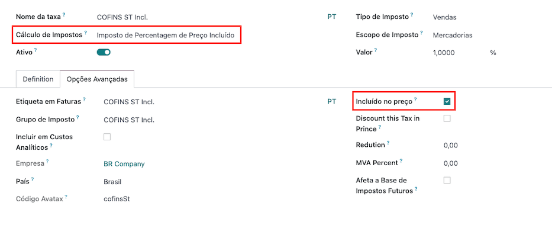

Brazil¶
Introduction¶
With the Brazilian localization you can automatically compute sales taxes for goods using AvaTax (Avalara) through API calls, also configure taxes for services.
For the goods tax computation part, you need to configure the contacts, company, products, and create an account in Avatax from the Odoo general settings.
For the services taxes, you can create and configure them from Odoo directly without computing them with AvaTax.
The localization also includes taxes and a chart of accounts template that can be modified if needed.
Configuration¶
Modules installation¶
Install the following modules to get all the features of the Brazilian localization:
Name |
Technical name |
Description |
|---|---|---|
Brazilian - Accounting |
|
Default fiscal localization package - adds accounting characteristics for the Brazilian localization, which represent the minimum configuration required for a company to operate in Brazil. The module’s installation automatically loads: the chart of accounts, taxes, and required fields to properly configure the contact. |
Brazil - Accounting Reports |
|
Adds a simple tax report that helps check the tax amount per tax group in a given period of time. Also adds the P&L and BS adapted for the Brazilian market. |
Avatax Brazil |
|
Add Brazilian tax calculation via Avatax and all necessary fields needed to configure Odoo in order to properly use Avatax and send the needed fiscal information to retrieve the correct taxes. |
Avatax for SOs in Brazil |
|
Same as the |
Configure your company¶
To configure your company information, go to the app and search the name given to your company.
Select the Company option at the top of the page. Then, configure the following fields:
Name
Address (add City, State, Zip Code, Country)
Tax ID (CNPJ)
IE (State Registration)
IM (Municipal Registration)
SUFRAMA code (Superintendence of the Manaus Free Trade Zone - add if applicable)
Phone
Email

Configure the Fiscal Information within the Sales and Purchase tab:
Add the Fiscal Position for Avatax Brazil.
Tax Regime (Federal Tax Regime)
ICMS Taxpayer Type (indicates ICMS regime, Exempt status, or Non-Taxpayer.)
Main Activity Sector

Finally, upload a company logo and save the contact.
Note
If you are a simplified regime, you need to configure the ICMS rate under .
Configure AvaTax integration¶
Avalara AvaTax is a tax calculation provider that can be integrated in Odoo to automatically compute taxes by taking into account the company, contact (customer), product, and transaction information to retrieve the correct tax to be used.
Odoo is a certified partner of Avalara Brazil, which means that Avalara experts reviewed workflows covered within the scope of the integration.
Using this integration requires In-App-Purchases (IAPs) to compute taxes. Every time you compute taxes, an API call is made, using credits from your IAP credits balance.
Credential configuration¶
To activate AvaTax in Odoo, you need to create an account. To do so, go to , and, in the AvaTax Brazil section, add the email address you want to use to log in to the AvaTax portal, and click on Create account. This email is used as the administrator email address in AvaTax.
After you create the account from Odoo, you need to go to the Avalara Portal to set up your password:
Access the Avalara portal
Click on Meu primeiro acesso
Add the email address you used in Odoo to create the Avalara/Avatax account, and then click Solicitar Senha
You will receive an email with a token and a link to create your password. Click on this link and copy-paste the token to allocate your desired password.
Warning
If you intend first to try the integration on a testing or sandbox database, using an alternate email address is recommended, as you won’t be able to re-use the same email address on your production database.
Tip
You can start using AvaTax in Odoo without creating a password and accessing the Avalara Portal; for Odoo, the only requirement to start using the Avalara Tax Computation Engine is to create an account from the settings page.

Note
You can transfer API credentials. Use this only when you have already created an account in another Odoo instance and wish to reuse it.
Configure master data¶
Chart of accounts¶
The chart of accounts is installed by default as part of the data set included in the localization module. The accounts are mapped automatically in their corresponding taxes, and the default account payable and account receivable fields.
Note
The chart of accounts for Brazil is based on the SPED CoA, which gives a baseline of the accounts needed in Brazil.
You can add or delete accounts according to the company’s needs.
Taxes¶
Taxes are automatically created when installing the Brazilian localization. Taxes are already configured, and some of them are used by Avalara when computing taxes on the sales order or invoice.
Taxes can be edited, or more taxes can be added. For example, some taxes used for services need to be manually added and configured, as the rate may differ depending on the city where you are offering the service.
Important
Taxes attached to services are not computed by AvaTax. Only goods taxes are computed.
When configuring a tax used for a service that is included in the final price (when the tax is not added or subtracted on top of the product price), set the Tax Computation to Percentage of Price Tax Included, and, on the Advanced Options tab, check the Included in Price option.
For more information on configuring taxes to fit your needs better, please go to the taxes functional documentation.
Warning
Do not delete taxes, as they are used for the AvaTax tax computation. If deleted, Odoo creates them again when used in an SO or invoice and computing taxes with AvaTax, but the account used to register the tax needs to be re-configured in the tax’s Definition tab, under the Distribution for invoices and Distribution for refunds sections.
Products¶
To use the AvaTax integration on sale orders and invoices, first specify the following information on the product:
CEST Code (Code for products subject to ICMS tax substitution)
Mercosul NCM Code (Mercosur Common Nomenclature Product Code)
Source of Origin (Indicates the origin of the product, which can be foreign or domestic, among other possible options depending on the specific use case)
SPED Fiscal Product Type (Fiscal product type according to SPED list table)
Purpose of Use (Specify the intended purpose of use for this product)

Note
Odoo automatically creates three products to be used for transportation costs associated with
sales. These are named Freight, Insurance, and Other Costs. They are already configured, if
more need to be created, duplicate and use the same configuration (configuration needed:
Product Type Service, Transportation Cost Type Insurance, Freight,
or Other Costs)
Contacts¶
Before using the integration, specify the following information on the contact:
General information about the contact:
Select the Company option for a contact with a tax ID (CNPJ), or check Individual for a contact with a CPF.
Name
Address: Zip Code is a required field to compute taxes properly.
Tax ID or CPF: Use CPF for individuals and Tax ID (CNPJ) for companies
IE: state tax identification number
IM: municipa tax identification number
SUFRAMA code: SUFRAMA registration number
Phone
Email
Note
The CPF, IE, IM, and SUFRAMA code fields are are hidden until the Country is set to
Brazil.Fiscal information about the contact under the Sales & Purchase tab:
Fiscal Position: add the AvaTax fiscal position to automatically compute taxes on sale orders and invoices automatically.
Tax Regime: federal tax regime
ICMS Taxpayer Type: taxpayer type determines if the contact is within the ICMS regime, if it is exempt, or if it is a non-taxpayer.
Main Activity Sector: list of main activity sectors of the contact
Fiscal positions¶
To compute taxes on sale orders and invoices, it is necessary to have a Fiscal Position with the Detect Automatically and the Use AvaTax API options enabled.
The Fiscal Position can be configured on the contact or selected when creating a sales order or an invoice.

Workflows¶
This section provides an overview of the actions that trigger API calls for tax computation.
Warning
Please note that each API call incurs a cost. Be mindful of the actions that trigger these calls to manage costs effectively.
Tax calculations on quotation / sales orders¶
Trigger an API call to calculate taxes on a quotation or sales order automatically with AvaTax in any of the following ways:
- Quotation confirmation
Confirm a quotation into a sales order.
- Manual trigger
Click on Compute Taxes Using Avatax.
- Preview
Click on the Preview button.
- Email a quotation / sales order
Send a quotation or sales order to a customer via email.
- Online quotation access
When a customer accesses the quotation online (via the portal view), the API call is triggered.
Tax calculations on invoices¶
Trigger an API call to calculate taxes on a customer invoice automatically with AvaTax any of the following ways:
- Manual trigger
Click on Compute Taxes Using AvaTax.
- Preview
Click on the Preview button.
- Online invoice access
When a customer accesses the invoice online (via the portal view), the API call is triggered.
Note
The Fiscal Position must be set to Automatic Tax Mapping (Avalara Brazil) for any
of these actions to compute taxes automatically.